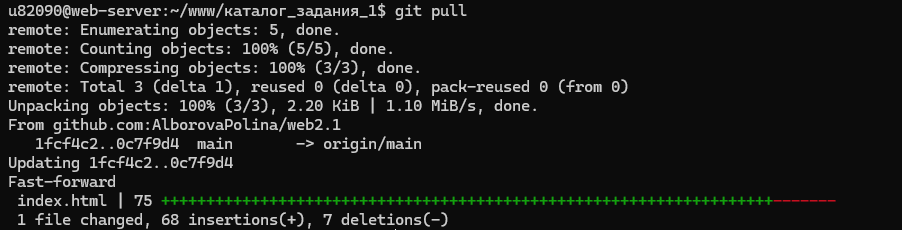

-
С помощью команды ping на учебном сервере узнать IP-адрес веб-сервера kubsu.ru. Команда ping используется для проверки доступности узла в сети и качества соединения с ним. Процесс продолжается до тех порпока вы не остановите его командой Ctrl + C.

-
С помощью команды nslookup узнать A-записи и MX-записи домена kubsu.ru и kubsu-dev.ru. Она отправляет запросы к DNS-серверам, чтобы узнать IP-адрес по доменному имени или наоборот домен по IP-адресу. A-запись (Address record) связывает доменное имя с конкретным IP-адресом сервера. Это позволяет браузеру понятьпо какому адресу в сети искать ваш сайт. MX-запись (Mail Exchange) указывает на почтовые серверы, ответственные за прием электронной почты для данного домена.

-
С помощью команды whois узнать дату регистрации домена kubsu.ru и kubsu-dev.ru. Команда whois в консоли сервера — это сетевой инструмент для получения регистрационных данных о доменных именах, IP-адресах и автономных системах.

-
C помощью SSH склонировать репозиторий со скриншотами и страницей в каталог www. Это делается командой git clone, на скриншоте пример импользования команды git pull, которая обновляет каталог файлов.

-
С помощью программы FileZilla или любого другого клиента SFTP соединиться с учебным сервером.